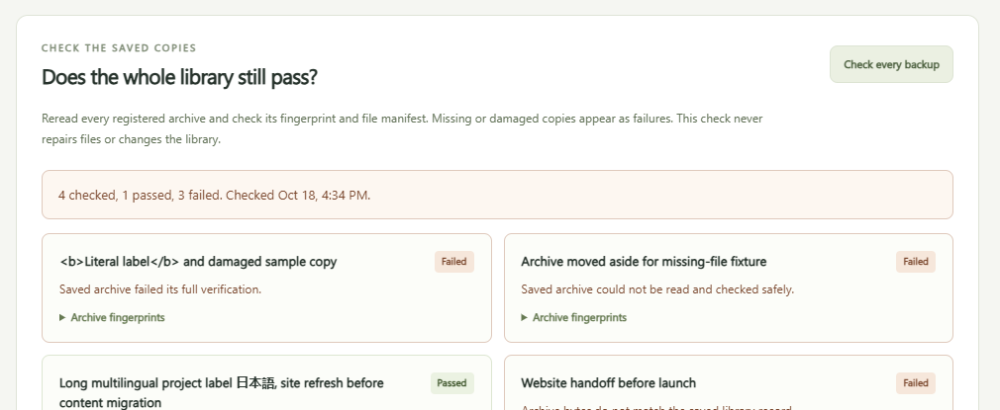
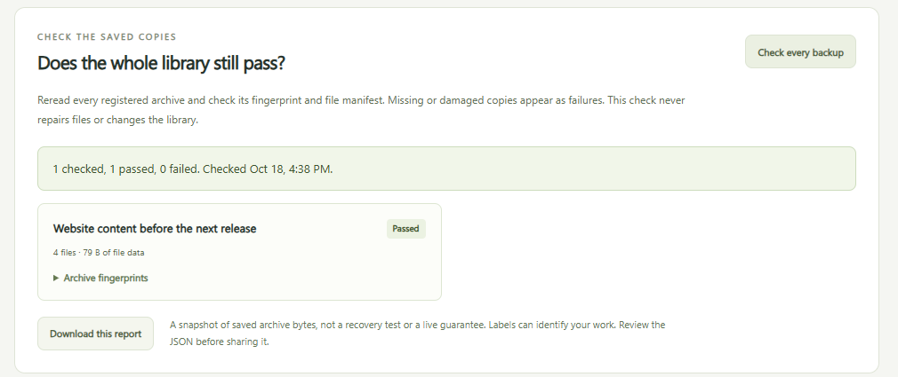
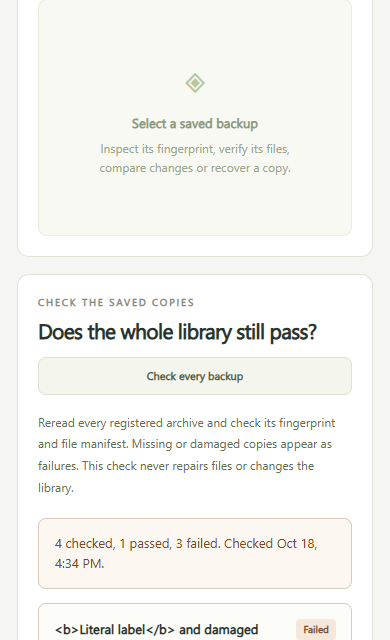

Workbench guide
Check every saved copy.
Reread every backup before you need it.
archive-desk-workbench-0.4-source.zip3206 4dde ... b885 7a5e

Read the saved bytes again.
Fingerprint, structure and manifest, one copy at a time.
Keep failed copies visible.
Each failure gets its own row. Nothing is removed.
Download the dated result.
The same passes and failures, as JSON.

Try it
- Start the app. The overview shows how.
- Create a backup or import an existing Archive Desk ZIP.
- Select Check every backup below the saved library.
- Read the totals and every failed row. Download this report saves the same result as JSON. A check never starts a repair or a recovery.

Reading the result
Label, recorded and fresh fingerprint, status and reason. An empty library is never a pass.
History stays apart from the fresh check. Failures show Check failed.
No absolute paths. Read it before sharing.
Recovery stays separate
Recovery still runs through its own reviewed plan, which checks a new destination and the file list before you confirm.
- Unencrypted Archive Desk ZIPs only.
- Up to 500 files, 20 MiB per file, 50 MiB of source data and a 52 MiB ZIP.
- Manual checks only, with no schedule or cloud sync.